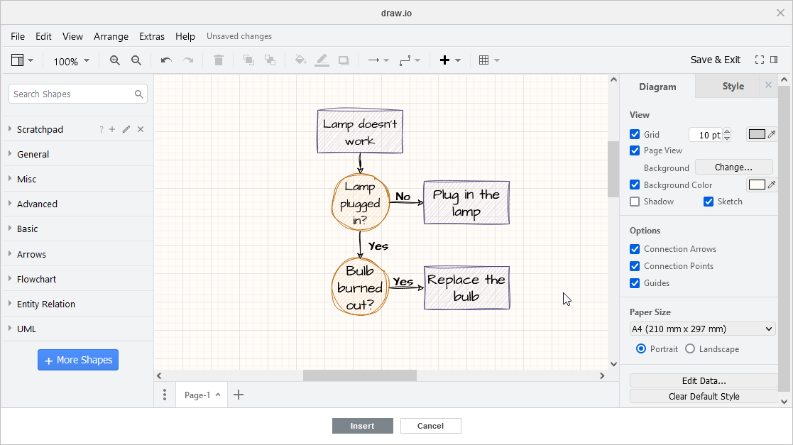

Kreiranje i umetanje dijagrama
Ako je potrebno da kreirate mnogo različitih i složenih dijagrama, ONLYOFFICE Editor dokumenata vam nudi draw.io dodatak koji može da kreira i podešava takve dijagrame.
Počevši od verzije ONLYOFFICE Docs 8.2, dodaci više nisu uključeni u uređivače po defaultu. Dodaci se instaliraju putem Upravljača dodacima.
- Izaberite mesto na stranici gde želite da umetnete dijagram.
- Prebacite se na karticu Dodaci i kliknite na draw.io.
-
Prozor draw.io će se otvoriti i sadržati sledeće sekcije:
- Gornja alatna traka sadrži alate za upravljanje fajlovima, podešavanje interfejsa i uređivanje podataka putem kartica File, Edit, View, Arrange, Extras, Help i odgovarajućih opcija.
- Leva bočna traka sadrži različite oblike za izbor: Standard, Software, Networking, Business, Other. Da dodate nove oblike pored onih koji su već dostupni, kliknite na dugme More Shapes, izaberite potrebne tipove objekata i kliknite na Apply.
-
Desna bočna traka sadrži alate i podešavanja za prilagođavanje radnog lista, oblika, grafikona, listova, teksta i strelica:
-
Podešavanja Radnog lista:
-
Kartica Diagram:
- View: Mreža, njena veličina i boja, Prikaz stranice, Pozadina – možete izabrati lokalnu sliku, uneti URL ili izabrati odgovarajuću boju pomoću palete putem opcije Background Color, kao i dodati efekte Shadow i Sketch.
- Opcije: Connection Arrows, Connection Points, Guides.
- Veličina papira: orijentacija Portrait ili Landscape sa određenim parametrima dužine i širine.
-
Kartica Style:
- Izaberite potrebnu kombinaciju boja, kao i podesite efekte Sketch i Rounded.
-
Kartica Diagram:
-
Podešavanja Oblika:
-
Kartica Style:
- Boja: Fill color, Gradient. Koristite alat Pipeta da kreirate prilagođenu boju.
- Linija: Boja, Tip, Širina, Perimeter width.
- Prozirnost.
- Grafički efekti: Rounded, Glass, Sketch, Shadow.
-
Kartica Text:
- Font: tip, veličina.
- Formatiranje teksta: Podebljano, Kurziv, Podvučeno.
- Horizontalno poravnanje: Levo, Centar, Desno.
- Vertikalno poravnanje: Vertikalna orijentacija teksta, Gore, Sredina, Dole.
- Pozicija: Gore levo, Gore, Gore desno, Levo, Centar, Desno, Dole levo, Dole, Dole desno.
- Smer pisanja: Automatski, S leva nadesno, S desna nalevo.
- Boja fonta.
- Pozadinska boja.
- Boja ivice.
- Prelom teksta.
- Formatirani tekst.
- Prozirnost.
- Razmaci: Gore, Globalno, Levo, Dole, Desno.
- Dugme Obriši formatiranje.
-
Kartica Arrange:
- Poredak slojeva: Ispred, Iza, Pomeri napred, Pomeri unazad.
- Veličina: Autosize, Širina, Visina, Zadrži proporcije.
- Pozicija: Levo, Gore.
- Ugao: vrednost u stepenima, Rotiraj oblik samo za 90°.
- Okretanje: Horizontalno, Vertikalno.
- Poravnanje: Snap to Grid.
- Dugme Grupiši.
- Dugme Kopiraj veličinu.
- Resetuj: Sve, Waypoints, Connection Points.
- Zaključaj/Otključaj za ograničavanje uređivanja.
-
Kartica Style:
-
Podešavanja Strelica:
- Boja: Fill color, Gradient.
- Linija: Oblik, Boja, Povezivanje, Šablon, Širina, Waypoints, Početak linije, Kraj linije.
- Prozirnost.
- Grafički efekti: Sketch, Shadow.
-
Podešavanja Radnog lista:
- Radna površina za pregled dijagrama, unos i uređivanje podataka. Ovde možete pomerati objekte, formirati sekvencijalne dijagrame i povezivati objekte strelicama.
-
Statusna traka sadrži alate za navigaciju radi lakšeg prebacivanja između listova i njihovog upravljanja.

Koristite ove alate da kreirate potreban dijagram, uredite ga i kada završite, kliknite na dugme Insert da biste ga dodali u dokument.